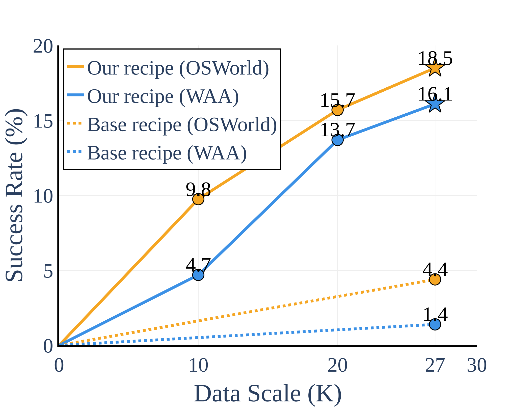
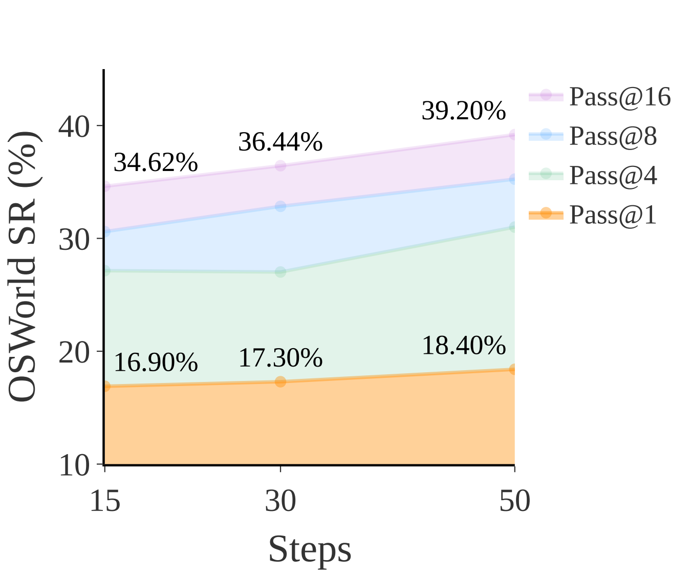

Analysis
Data Scaling and Test Time Scaling
Our method enables performance to scale effectively with increased training data. The high Pass@N performance demonstrates OpenCUA-7B has great potencial of test time scaling.

Training-data scaling on OSWorld

Pass@N curves (temperature = 0.1)